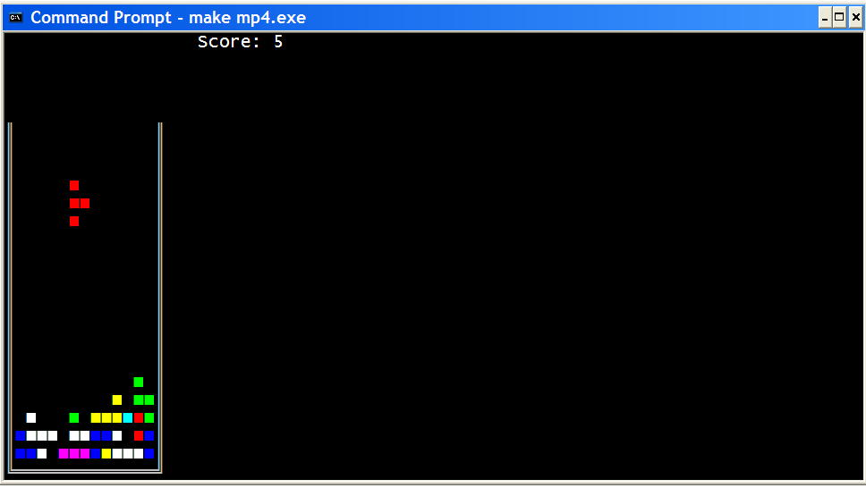

Computer
Engineering II
Machine Problem 4
| Schedule | Lab schedule |
| Homework | Lab Manual |
| Machine Problems | Resources |
| Final Project | Photos |
| Gradebook | Feedback |
| Syllabus | Archives |
| Lectures | Download NASM |
| Home | Restricted access |
|
|
| ||||||||||||||||
Machine Problem 4: Tetris
Computers are to computing as instruments are to music. Software is the score, whose interpretation amplifies our reach and lifts our spirit.... As in the case of music, the invisibility of software is no more mysterious than where your lap goes when you stand up. The true mystery ... is how so much can be accomplished with the simplest of materials, given the right architecture. --Alan Kay, Scientific American, September 1984 You will write a program MP4 that implements the popular Tetris video game. Files for MP4 are on the V: drive in the directory V:\ece390\mp4.
In this directory are the program framework mp4.asm and a
running version of the program mp4lab.exe. Lab versions of subroutines
are in libmp4.lib, which contains all subroutines of LIB291 plus
libInit, libKbdInt, libTask1, libTask2, libTask3, libMovePiece,
libGenPiece, libDrawBorder, libEnq, and libDeq. You will use mp4xit instead of dosxit.
You should start by copying these files to your home directory with the following command: Reading: Lab Notes, Sections 10.1 (Keyboard), 11.1 (Text Mode) Program SpecificationA four-square piece falls into a container. The piece responds to the following key presses:
The display looks best in 20 or 24 point Lucinda Console font. Program OrganizationIn this machine problem, a large amount of data and the main procedure are provided for you; however, you must write the code to replace the library subroutines libInit, libKbdInt, libTask1, libTask2, libTask3, libMovePiece, libGenPiece, libDrawBorder, libEnq, and libDeq. You will replace these subroutines from the libmp4 library by deleting the statements that call the libmp4 subroutine and by adding your own code. Each subroutine that you write should match the output of the library subroutine exactly. The program uses the following global variables: SavKOff RESW 1 ; Keyboard interrupt vector SavKSeg RESW 1 SavTOff RESW 1 ; User timer interrupt vector SavTSeg RESW 1 Ticks DW 0 ; Number of timer ticks PLoc RESB 8 ; Location of falling piece: row,column for each square PType RESW 1 ; Piece type, 0 to 18 Color DB 09h ; Current color of piece, 09 to 0Fh State DB 1 ; 1=moving, 0=stopped Score DW 0 ; Score: number of rows cleared Occup RESB ROWS*(MAXCOL+1) ; Master state of the container
The following data are provided for you.
The program uses a circular queues to store keyboard scan codes. QBeg EQU 0 ; Beginning offset of queue area QCap EQU 2 ; Capacity of of queue QFront EQU 4 ; Index of front item QRear EQU 6 ; Index of rear item QCount EQU 8 ; How many items currently in queue QData EQU 10 ; Byte to input or output KQList RESB 0 ; Parameter list for Keyboard Queue KQBeg DW KQArea ; Offset of Keyboard Queue area KQCap DW 10 KQFront DW 0 KQRear DW -1 KQCount DW 0 KQData RESB 1 KQArea RESB 10The queue is specified by a parameter list. The first word of the list specifies the offset of the first byte of the queue area, where data are stored. The second word is the capacity of the queue. The third word of the parameter list is the index of the byte at the front of the queue, and the fourth word is the index of the byte at the rear of the queue. These indices run from 0 to the capacity minus 1. The byte at the front of the queue is the first to be dequeued. The byte at the rear of the queue was the last to be enqueued. The fifth word of the parameter list is a count of the number of items currently stored in the queue. Enq uses the Data byte on the parameter list for the item to be enqueued, and Deq delivers the dequeued item into this byte. This queue structure will be used with multiple queues in MP5. The mp4.asm program framework has the user timer interrupt service routine TimInt and a random number generator subroutine Rand. You will replace each of the subroutines listed below with your own code. Document each subroutine with a header.
Optional Features
Friendly Advice
Demonstration, Documentation, and GradingDemonstrate your program to an ECE 390 staff member. At the demo, you will be asked to alter your program to generate only Type 0 and Type 1 pieces, so that the features of Task3 can be tested easily. You will also be asked why Task1 sets Ticks to zero after the user presses the space bar. As before, keep an MP development log and write a cover memo, which should be submitted with the program after the demonstration. The cover memo should address the following questions:
Your program will be graded according to the clarity of your design and the quality of your documentation. Gradesheet: mp4.asm (program framework)
; MP4 - Tetris program
; Michael Loui
; 25 September 2004
; This program implements a version of the Tetris video game
BITS 16
;====== SECTION 1: Define constants =======================================
CR EQU 0Dh ; Carriage return
LF EQU 0Ah ; Line feed
BS EQU 08h ; Backspace
SPACE EQU 20h ; Space
KVEC EQU 0024h ; Location of Keyboard Vector
TVEC EQU 0070h ; Location of User Timer Vector
ESCSCAN EQU 1 ; Scan code for ESC key
SPSCAN EQU 57 ; Scan code for spacebar
UP EQU 72 ; Scan code for up arrow
LEFT EQU 75 ; Scan code for left arrow
RIGHT EQU 77 ; Scan code for right arrow
DOWN EQU 80 ; Scan code for down arrow
ROWS EQU 25 ; Number of rows in entire display
COLS EQU 80 ; Number of columns in entire display
MINROW EQU 5 ; Topmost row of the container
MAXROW EQU 23 ; Bottom row of the container
MINCOL EQU 1 ; Leftmost column for the container
MAXCOL EQU 13 ; Rightmost column for the container
TYPES EQU 19 ; 19 types of pieces
; You may redefine the constants below
Square EQU 0FEh ; Square in Tetris piece
Speed EQU 6 ; Number of clock ticks before move
Wall EQU 0BAh ; Left and right walls
Lcorner EQU 0C8h ; Bottom left corner
Rcorner EQU 0BCh ; Bottom right corner
Bottom EQU 0CDh ; Bottom wall
;====== SECTION 2: Declare external procedures ============================
EXTERN ascbin, binasc, kbdin, dspout, dspmsg, dosxit
;====== SECTION 3: Define stack segment ===================================
SEGMENT stkseg STACK ; *** STACK SEGMENT ***
RESB 64*8
stacktop:
RESB 0 ; NASM bug workaround
;====== SECTION 4: Define code segment ====================================
SEGMENT code ; *** CODE SEGMENT ***
;====== SECTION 5: Declare variables for main procedure ===================
SavKOff RESW 1 ; Keyboard interrupt vector
SavKSeg RESW 1
SavTOff RESW 1 ; Timer interrupt vector
SavTSeg RESW 1
Ticks DW 0 ; Number of timer ticks
PLoc RESB 8 ; Location of falling piece: row,column for each square
PType RESW 1 ; Piece type, 0 to 18
Color DB 09h ; Current color of piece, 09 to 0Fh
State DB 1 ; 1=moving, 0=stopped
Score DW 0 ; Score: number of rows cleared
Occup RESB ROWS*(MAXCOL+1) ; Master state of the container
m EQU 7 ; Midpoint column
InitLoc DB 0,m,1,m,2,m,3,m ; Type 0: vertical bar
DB 0,m-2,0,m-1,0,m,0,m+1 ; Type 1: horzontal bar
DB 0,m,1,m-1,1,m,1,m+1 ; Type 2: T up
DB 0,m,1,m,1,m+1,2,m ; Type 3: T right
DB 0,m-1,0,m,0,m+1,1,m ; Type 4: T down
DB 0,m,1,m-1,1,m,2,m ; Type 5: T left
DB 0,m,0,m+1,1,m,1,m+1 ; Type 6: Big square
DB 0,m+1,1,m-1,1,m,1,m+1 ; Type 7: L, quadrant 1
DB 0,m,1,m,2,m,2,m+1 ; Type 8: L, quadrant 4
DB 0,m-1,0,m,0,m+1,1,m-1 ; Type 9: L, quadrant 3
DB 0,m-1,0,m,1,m,2,m ; Type 10: L, quandrant 2
DB 0,m-1,0,m,0,m+1,1,m+1 ; Type 11: backward L, quadrant 4
DB 0,m,1,m,2,m-1,2,m ; Type 12: backward L, quadrant 3
DB 0,m-1,1,m-1,1,m,1,m+1 ; Type 13: backward L, quadrant 2
DB 0,m,0,m+1,1,m,2,m ; Type 14: backward L, quadrant 1
DB 0,m-1,0,m,1,m,1,m+1 ; Type 15: Z
DB 0,m+1,1,m,1,m+1,2,m ; Type 16: rotated Z
DB 0,m,0,m+1,1,m-1,1,m ; Type 17: backward Z
DB 0,m,1,m,1,m+1,2,m+1 ; Type 18: rotated backward Z
Rotats DB 1,-1,0,0,-1,1,-2,2 ; Rotate Type 0 to Type 1
DB -1,1,0,0,1,-1,2,-2 ; Rotate Type 1 to Type 0
DB 0,0,0,1,0,1,1,-1 ; Rotate Type 2 to Type 3
DB 1,-1,0,0,0,0,0,0 ; Rotate Type 3 to Type 4
DB -1,1,0,-1,0,-1,0,0 ; Rotate Type 4 to Type 5
DB 0,0,0,0,0,0,-1,1 ; Rotate Type 5 to Type 2
DB 0,0,0,0,0,0,0,0 ; Rotate Type 6 to Type 6
DB 0,-1,0,1,1,0,1,0 ; Rotate Type 7 to Type 8
DB 1,-1,0,0,-1,1,0,-2 ; Rotate Type 8 to Type 9
DB -1,0,-1,0,0,-1,0,1 ; Rotate Type 9 to Type 10
DB 0,2,1,-1,0,0,-1,1 ; Rotate Type 10 to Type 7
DB -1,1,0,0,1,-2,0,-1 ; Rotate Type 11 to Type 12
DB 0,-1,0,-1,-1,1,-1,1 ; Rotate Type 12 to Type 13
DB 0,1,-1,2,0,0,1,-1 ; Rotate Type 13 to Type 14
DB 1,-1,1,-1,0,1,0,1 ; Rotate Type 14 to Type 11
DB 0,2,1,0,0,1,1,-1 ; Rotate Type 15 to Type 16
DB 0,-2,-1,0,0,-1,-1,1 ; Rotate Type 16 to Type 15
DB 0,0,1,-1,0,2,1,1 ; Rotate Type 17 to Type 18
DB 0,0,-1,1,0,-2,-1,-1 ; Rotate Type 18 to Type 17
NewType DW 1,0,3,4,5,2,6 ; New piece type after rotation
DW 8,9,10,7,12,13,14,11
DW 16,15,18,17
VRight DB 0,1,0,1,0,1,0,1 ; Vector to move right: add 1 to cols
VLeft DB 0,-1,0,-1,0,-1,0,-1 ; Vector to move left: subtract 1 from cols
VDown DB 1,0,1,0,1,0,1,0 ; Vector to move down: add 1 to rows
VRot RESB 8 ; Vector for rotation
QBeg EQU 0 ; Beginning offset of queue area
QCap EQU 2 ; Capacity of of queue
QFront EQU 4 ; Index of front item
QRear EQU 6 ; Index of rear item
QCount EQU 8 ; How many items currently in queue
QData EQU 10 ; Byte to input or output
KQList RESB 0 ; Parameter list for Keyboard Queue
KQBeg DW KQArea ; Offset of Keyboard Queue area
KQCap DW 10
KQFront DW 0
KQRear DW -1
KQCount DW 0
KQData RESB 1
KQArea RESB 10
Rnum DW 1 ; Current stored random number
; You may declare additional variables here
;====== SECTION 6: Program initialization =================================
..start:
MOV AX, CS ; Initialize Default Segment register
MOV DS, AX
MOV AX, stkseg ; Initialize Stack Segment register
MOV SS, AX
MOV SP, stacktop ; Initialize Stack Pointer register
;====== SECTION 7: Main procedure =========================================
main:
MOV AH, 2Ch ; Get current time of day
INT 21h ; (DH) = secs, (DL) = hundredths of secs
MOV WORD [Rnum], DX ; Initialize stored random number
CALL Init ; Initialization
.mainLoop:
CALL Task1
CALL Task2
CALL Task3
JMP .mainLoop
; Interrupt service routine for timer
TimerInt:
ADD WORD [CS:Ticks], 1
IRET
; Subroutine Rand
; Generates random number
; Inputs (CX) -- range of random number
; Rnum -- current stored random number
; Ouputs (AX) -- random number in range 0 .. (CX)-1
; Rnum -- new value of stored random number
C2053 DW 2053
C13849 DW 13849
C216M1 DW 0FFFFh ; 2^16 - 1
RandOut RESW 1
Rand:
PUSHA
MOV AX, WORD [Rnum] ; Current random number
MUL WORD [C2053]
ADD AX, WORD [C13849]
ADC DX, 0 ; Propagate carry to DX
DIV WORD [C216M1] ; Remainder is in DX
MOV WORD [Rnum], DX ; New random number
MOV AX, DX
MOV DX, 0 ; Prepare for division
DIV CX
MOV [RandOut], DX ; In range 0, ..., (CX) - 1
POPA
MOV AX, [RandOut]
RET
Init:
CALL libInit
RET
KbdInt:
CALL libKbdInt
IRET
Task1:
CALL libTask1
RET
Task2:
CALL libTask2
RET
Task3:
CALL libTask3
RET
MovePiece:
CALL libMovePiece
RET
GenPiece:
CALL libGenPiece
RET
DrawBorder:
CALL libDrawBorder
RET
Enq:
CALL libEnq
RET
Deq:
CALL libDeq
RET
|
| Fall 2004 |